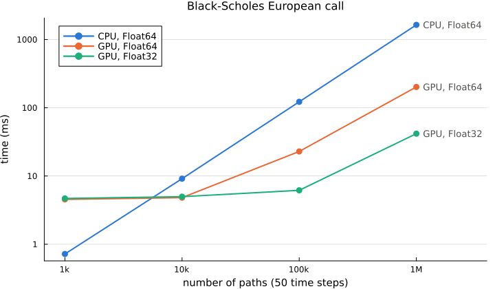

Performance
CPU or GPU
With CUDA.jl loaded, CudaMode runs the simulation on the GPU, and the code is the same as on the CPU (see Monte Carlo configuration). Whether it pays depends on the number of paths: every time step launches a kernel, so below about ten thousand paths the launches cost more than the computation, and above it the GPU wins by an increasing margin. Single precision helps much more on a GPU than on a CPU, because consumer GPUs have few double precision units.

Price of a European call under Black-Scholes with 50 time steps, minimum time in milliseconds:
| Paths | CPU, Float64 | GPU, Float64 | GPU, Float32 |
|---|---|---|---|
| 1 000 | 0.72 | 4.54 | 4.69 |
| 10 000 | 9.14 | 4.82 | 4.98 |
| 100 000 | 122.32 | 22.90 | 6.17 |
| 1 000 000 | 1640.16 | 201.76 | 41.74 |
Measured on an Intel Core i7-8550U (one thread) and an NVIDIA GeForce MX150, with Julia 1.13 and BenchmarkTools, synchronizing the GPU with CUDA.@sync (kernels are asynchronous, so without it the time stops at the launch). The script is docs/performance/scaling.jl; it needs a GPU, so the figure is not regenerated when the documentation is built.
Getting the most out of a run
- Price several payoffs on the same paths: a vector of payoffs, a
FinancialMonteCarlo.Positionor a smile simulate once. A smile on the GPU computes all its strikes in one kernel and keeps the prices there, so further work on them, such as implied volatilities, needs no transfer. - European payoffs need a single time step: the number of steps only matters for path dependent payoffs, early exercise and models without an exact one step scheme.
- Antithetic variates halve the normal draws and usually the variance too, at no extra cost.
- Constant rates are cheaper than curves, whose drift is integrated at every step.
- On the CPU,
MultiThreadingsplits the paths into batches priced on different threads; the results do not depend on the number of threads. - Keep the numeric type uniform:
Float32inputs giveFloat32paths and prices, and a singleFloat64input promotes the whole computation.